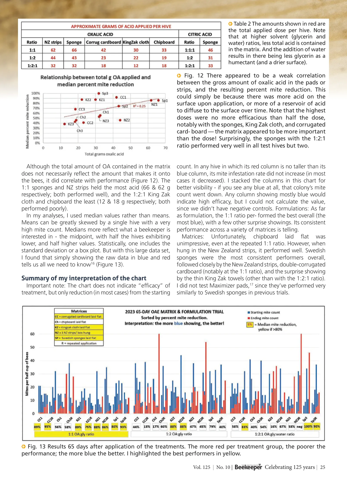

Although the total amount of OA contained in the matrix
does not necessarily reflect the amount that makes it onto
the bees, it did correlate with performance (Figure 12). The
1:1 sponges and NZ strips held the most acid (66 & 62 g
respectively; both performed well), and the 1:2:1 King Zak
cloth and chipboard the least (12 & 18 g respectively; both
performed poorly).
In my analyses, I used median values rather than means.
Means can be greatly skewed by a single hive with a very
high mite count. Medians more reflect what a beekeeper is
interested in - the midpoint, with half the hives exhibiting
lower, and half higher values. Statistically, one includes the
standard deviation or a box plot. But with this large data set,
I found that simply showing the raw data in blue and red
tells us all we need to know16 (Figure 13).
Summary of my interpretation of the chart
Important note: The chart does not indicate “efficacy” of
treatment, but only reduction (in most cases) from the starting
Table 2 The amounts shown in red are
the total applied dose per hive. Note
that at higher solvent (glycerin and
water) ratios, less total acid is contained
in the matrix. And the addition of water
results in there being less glycerin as a
humectant (and a drier surface).
Fig. 12 There appeared to be a weak correlation
between the gross amount of oxalic acid in the pads or
strips, and the resulting percent mite reduction. This
could simply be because there was more acid on the
surface upon application, or more of a reservoir of acid
to diffuse to the surface over time. Note that the highest
doses were no more efficacious than half the dose,
notably with the sponges, King Zak cloth, and corrugated
card- board — the matrix appeared to be more important
than the dose! Surprisingly, the sponges with the 1:2:1
ratio performed very well in all test hives but two.
Fig. 13 Results 65 days after application of the treatments. The more red per treatment group, the poorer the
performance; the more blue the better. I highlighted the best performers in yellow.
count. In any hive in which its red column is no taller than its
blue column, its mite infestation rate did not increase (in most
cases it decreased). I stacked the columns in this chart for
better visibility - if you see any blue at all, that colony’s mite
count went down. Any column showing mostly blue would
indicate high efficacy, but I could not calculate the value,
since we didn’t have negative controls. Formulations: As far
as formulation, the 1:1 ratio per- formed the best overall (the
most blue), with a few other surprise showings. Its consistent
performance across a variety of matrices is telling.
Matrices:
Unfortunately,
chipboard
laid
flat
was
unimpressive, even at the repeated 1:1 ratio. However, when
hung in the New Zealand strips, it performed well. Swedish
sponges were the most consistent performers overall,
followed closely by the New Zealand strips, double-corrugated
cardboard (notably at the 1:1 ratio), and the surprise showing
by the thin King Zak towels (other than with the 1:2:1 ratio).
I did not test Maximizer pads,17 since they’ve performed very
similarly to Swedish sponges in previous trials.
Vol. 125 | No. 10 |
Celebrating 125 years | 25